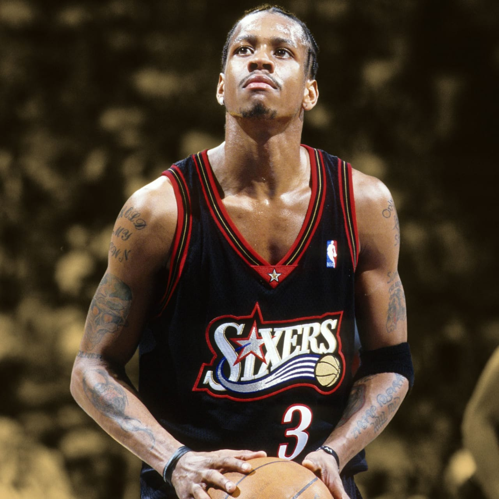

RESUME
Allen Iverson

Summary
Allen Iverson (born June 7, 1975, Hampton, Virginia, U.S.) is an American basketball player known for both explosive play on the court and controversy away from the game. He became the first great athlete to be strongly identified with the hip-hop movement
Education
High School: Bethel High School, Richard Milburn High School (1986-1991)
University: Computer Engineer,Georgetown University (1991-1996)
Work Experience
-
Professional Basketball Player (15 Season)
(1996-2011)
Teams:
Philadelphia 76ers,Denver Nuggets,Detroit Pistons,Memphis Grizzlies,Philadelphia 76ers,Beşiktaş J.K.1X MVP
-
Computer Engineer (5 Year)
(2020-Current)
Front-End Developer:
Creates websites and applications using web languages such as HTML, CSS, and JavaScript that allow users to access and interact with the site or appBack-End Developer:
Testing and Debugging the System and Data Base Managment Project Engineer:
Determine project specifications and acquire the necessary materials for completion.
Skills
- HTML ⭐⭐⭐
- CSS ⭐⭐⭐
- JAVA⭐⭐⭐⭐⭐
- JAVASCRIPT⭐⭐⭐
- DATABASE ⭐⭐⭐
- CROSS-OVER⭐⭐⭐⭐⭐
- SHOOTING⭐⭐⭐⭐
Awards and Certifications
Most Valuable Player (2001)
11× NBA All-Star (2000–2010)
2× NBA All-Star Game MVP (2001, 2005)
NBA Rookie of the Year (1997)
MICROSOFT Software Engineer Of The Year (2024)
AMAZON Coworker Of The Year(2021)
Other